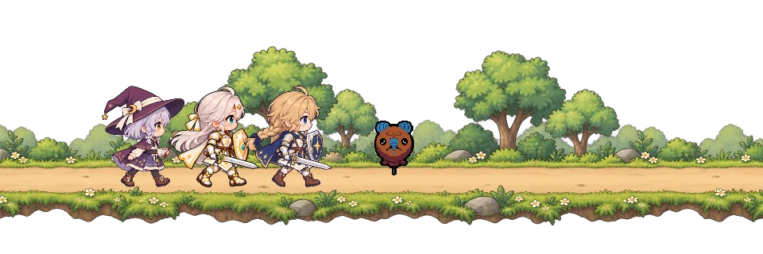
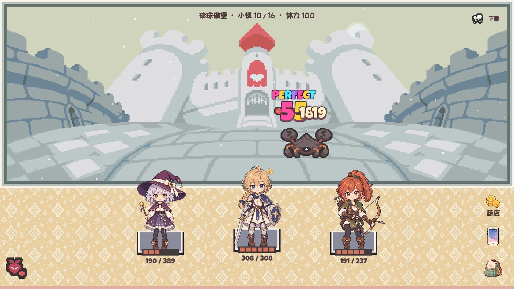
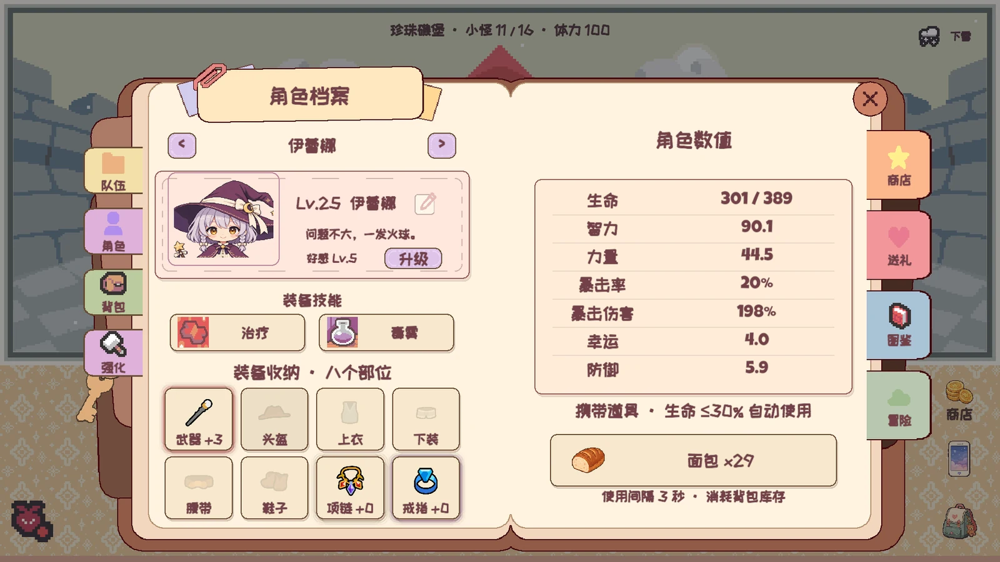
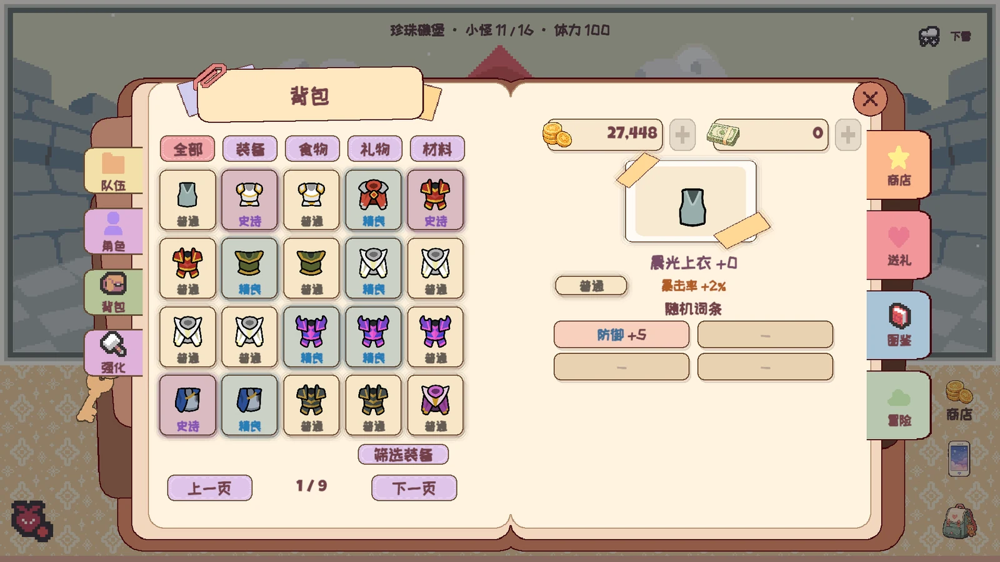
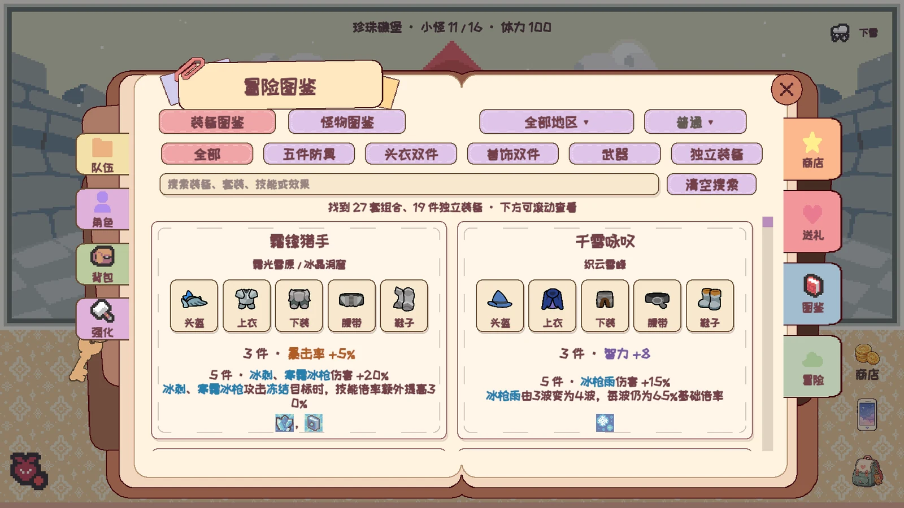

GATHER · COMBINE · GROW
A party to call your own
Meet charming companions with their own skills and roles. Shape your lineup, develop your heroes, and discover combinations that work together.
A LITTLE ADVENTURE FOR YOUR EVERYDAY
Gather your little party, discover your next favorite treasure, and make room for a softer kind of adventure.
Windows · macOS / Coming to Steam
01 / YOUR NEXT LITTLE WORLD
Cozy Tales is a journal-inspired idle RPG. Bring a party of charming adventurers into a gentle pixel world, discover equipment, and find the skills and sets that make your team feel like yours.
Tinker with a build when you have a moment. Let your party keep you company when life gets busy. Come back to a journal with a little more to tell.
GATHER · COMBINE · GROW
Meet charming companions with their own skills and roles. Shape your lineup, develop your heroes, and discover combinations that work together.
COLLECT · UPGRADE · DISCOVER
Collect equipment, filter for the stats you need, and discover skill-focused sets. Challenge map bosses for ascension materials and your next step forward.
STEP AWAY · RETURN · SMILE
When you close the game, offline rewards are calculated from your last map and party strength. Return to your earnings and pick up where you left off.
02 / A LITTLE COMPANY
Minimize the desktop game and your party becomes a tiny, transparent companion. They keep battling along a woodland path while you work, study, or simply take a breath.
DESKTOP ONLY · DRAGGABLE · LIVE BATTLESA little note for today
We'll be here,
adventuring along.

In-game companion preview, shown on an illustrative desktop.
03 / PAGES FROM THE JOURNAL
Real in-game screenshots.
Choose a page to take a closer look.




Screenshots show a development build. Details may change as the game grows.
YOUR NEXT CHAPTER
Add Cozy Tales to your Steam wishlist.
We'll see you when the adventure begins.
A FEW LITTLE DETAILS
Yes. When you return, the game calculates idle rewards from your time away, last map, and party strength. Offline idle play does not automatically spend stamina on separate boss challenges.
Desktop companion mode is designed for Windows and Mac. The iOS version is being developed for mobile play, including offline rewards, without a floating desktop companion.
The game supports English and Simplified Chinese, with language selection on the start screen.
Visit the Steam store through the links above and add the game to your wishlist. The mobile version is still in development; future availability will be updated here.